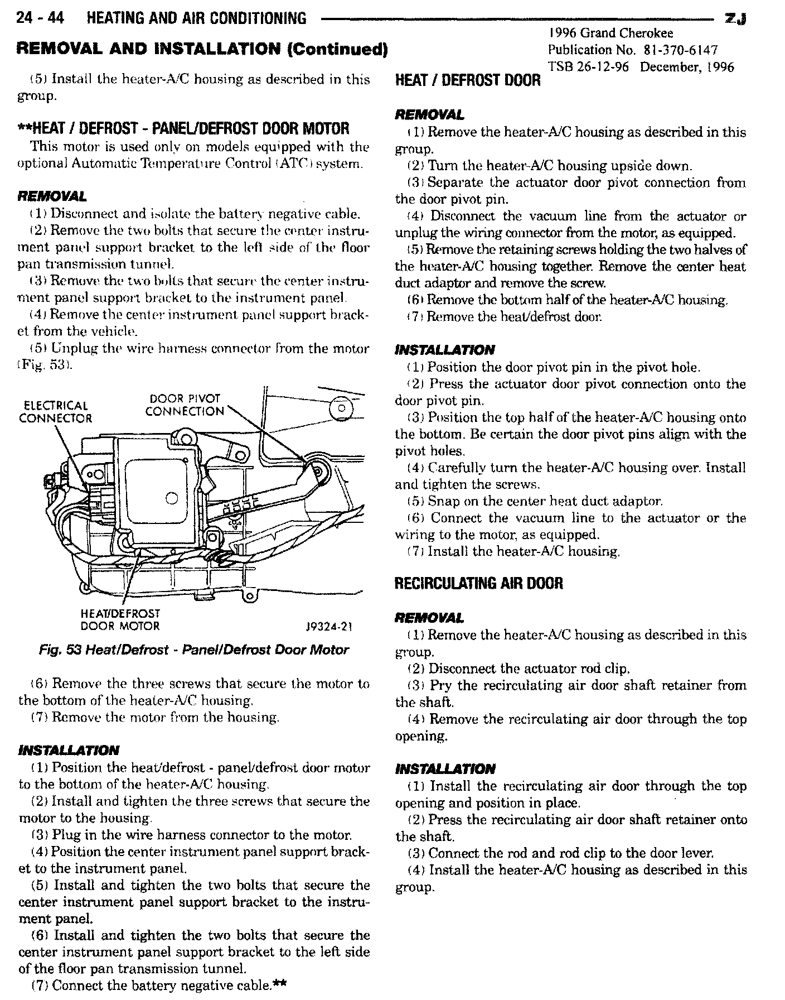

A/C - Air Door Motor Service Procedure Revisions
NUMBER: 26-12-96EGROUP: Miscellaneous
DATE: December, 1996
REVISIONS ARE HIGHLIGHTED WITH BLACK BARS IN THE MARGIN
Models:
1996 Grand Cherokee - Publication Number 81-370-6147
DESCRIPTION OF CHANGES
Revision to the panel/defrost motor service procedure

24-44